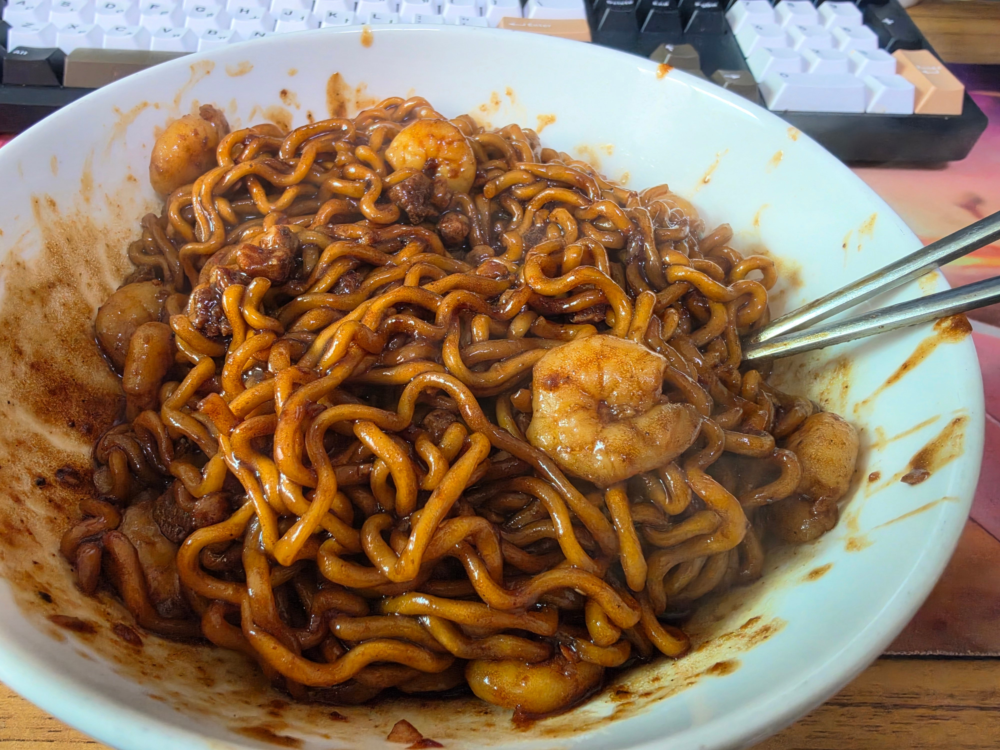
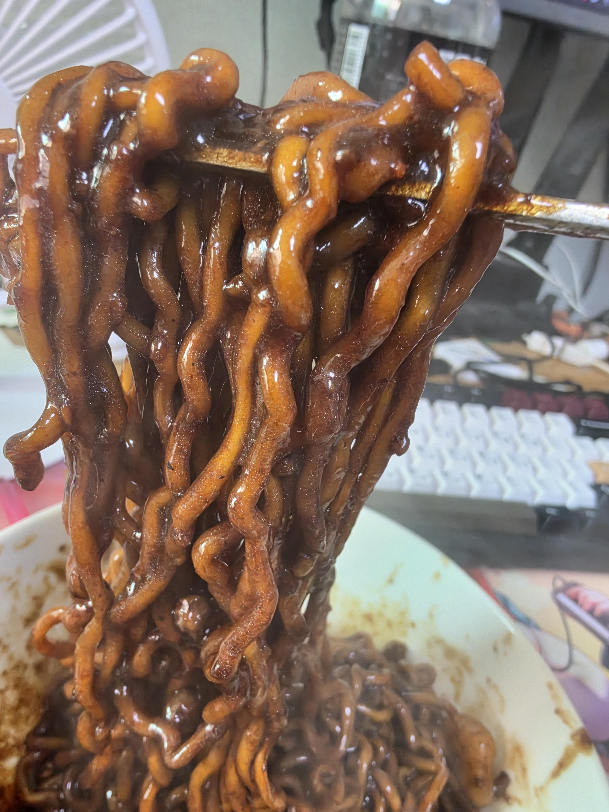

퓨어 올리브유에 다진 마늘.
그리고 흰다리 새우.
추가로 크러쉬드 레드페퍼.
아주 약한불로 살짝 익을때까지.
불쎄게 하고 물 정량보다 적게 .
면과 후레이크 넣고 물 안버리고 끓이기.
약간 물이 남은 시점에 스프 전량투하.
불끄고 엑스트라버진 올리브유 한두바퀴 두르고
존나 섞는 에멀전.


퓨어 올리브유에 다진 마늘.
그리고 흰다리 새우.
추가로 크러쉬드 레드페퍼.
아주 약한불로 살짝 익을때까지.
불쎄게 하고 물 정량보다 적게 .
면과 후레이크 넣고 물 안버리고 끓이기.
약간 물이 남은 시점에 스프 전량투하.
불끄고 엑스트라버진 올리브유 한두바퀴 두르고
존나 섞는 에멀전.
짜장라면 종류별로 다 해봤는데 다 무리없음 ㅇㅇ 짤에 있는게 짜르르로 만든거
오케이 좀따시도해본다
저번에 짜왕은 먹어봤늗네 진짜 너무 달아서 다 갖다버림
오 섹파게티
흐음.. 이따 저녁은 이걸로
짜르르 ㅇㄷ
식단중인데
시발!!
손질새우 좀 있는데 해먹어볼까
부자임?
개인적으로는 짜자로니가 제일 조아
저기에 국거리 소고기 볶아서 넣으면 자지러짐.

내아내임
말은 그럴싸해도 결국에 짜파게티잖아
ㅇㅇ 먹어보셈 존맛탱 짜파게티임. 애초에 원본이랑 맛도 다르고 ㅇㅇ
그냥 짜장면을 시켜 먹는 게 낫지 않겠니?
짜장 베이스라는거 말고는 공통점이 하나도 없는 다른 메뉴인데...?
닉상태가!
난 찌파게티 스프13그람이라 너무 적어서
새우나 소고기 좀 넣으면 싱거워지던데
간을 해도 짜파게티향이 줄어서 아쉬움
그래서 짜슐랭이 스프 17그람 들어있어서
사용함
뭐 짜파게티 소스를 따로 파니.그걸.사면 해결되긴 하는데
걍 짜슐랭이 편하더라
섹스다 섹스
새우 익히던 데 그대로 물 부어서 면 끓여?
ㅇㅇ
사천짜파 ㄱㄱ
저런거 안하고 걍 김치만 맛있어도 갓갓임
'아는 맛'이라 군침이 싹도네..
아.......
나 짜파게티만 먹고 짜파게티 개좋아하는데 짜르르도 괜찮음?